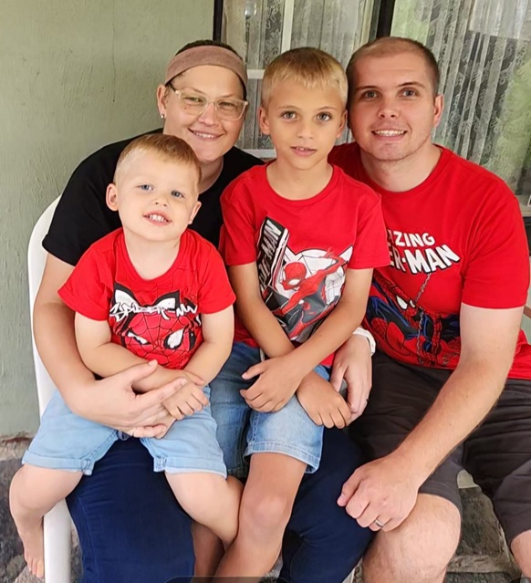
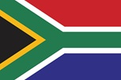

Damian A. Hunt
About Me

My name is Damian Hunt, I live in a small town East London that is in South Africa and not the UK.
I am married with 2 children. I currently work as a technician for a 2-way radio company and internet service provider.
I enjoy playing online games and going to the gym when there is time in a busy schedule. I currently serve as an Elders Quorum President in my local ward.
East London, South Africa
South Africa, a diverse nation of over 63 million people, is the southernmost African country,
featuring three capital cities: Pretoria (administrative), Cape Town (legislative), and Bloemfontein (judicial).
Renowned for its "Rainbow Nation" culture, it transitioned from apartheid to democracy in 1994,
with a robust constitution and 11 official languages. It has a major, industrialized, upper-middle-income economy.
